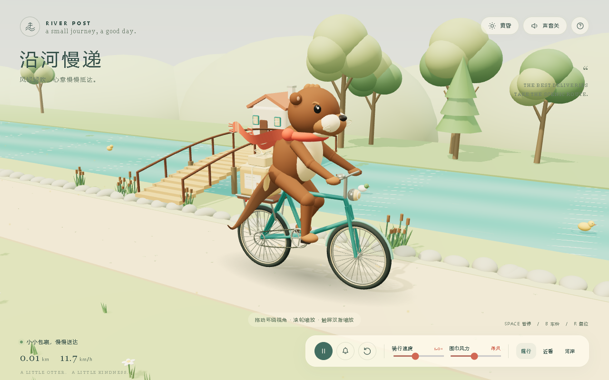
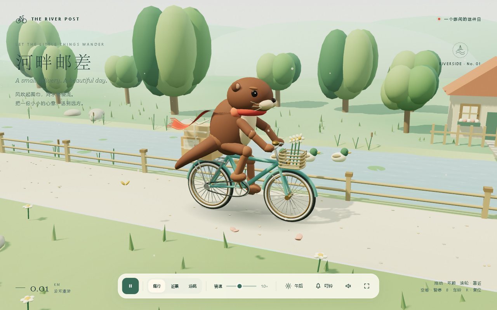
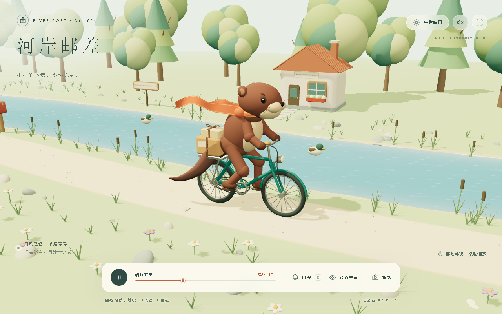
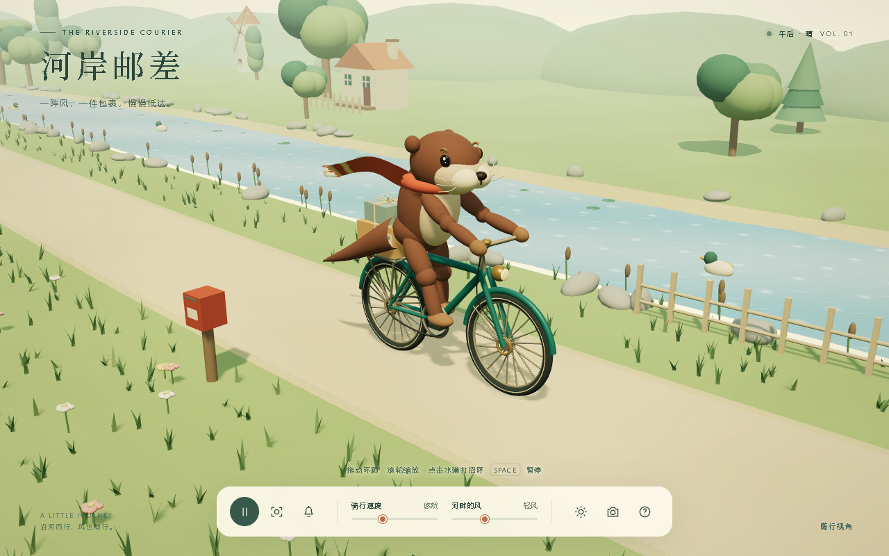
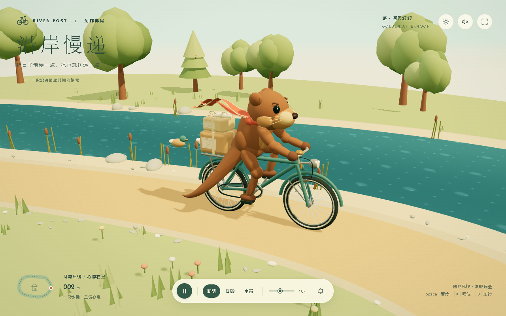
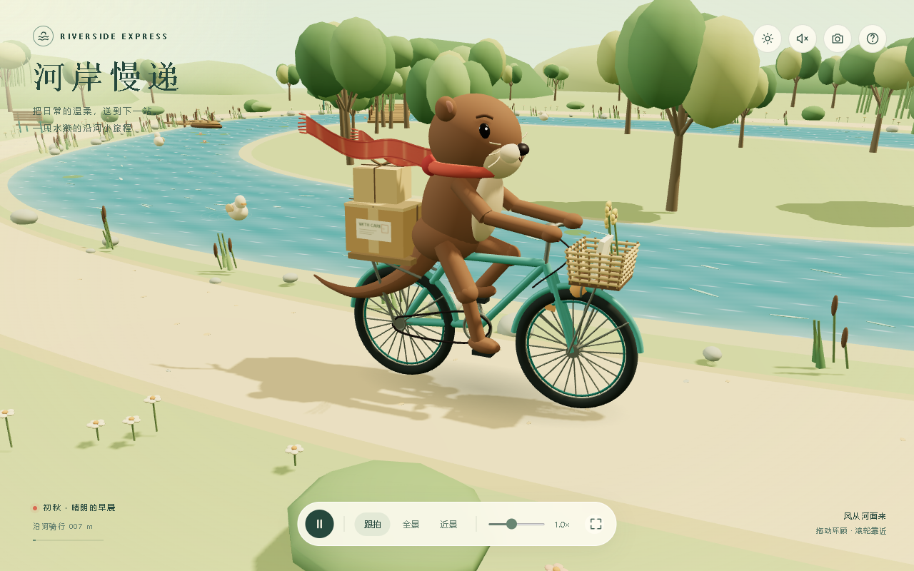
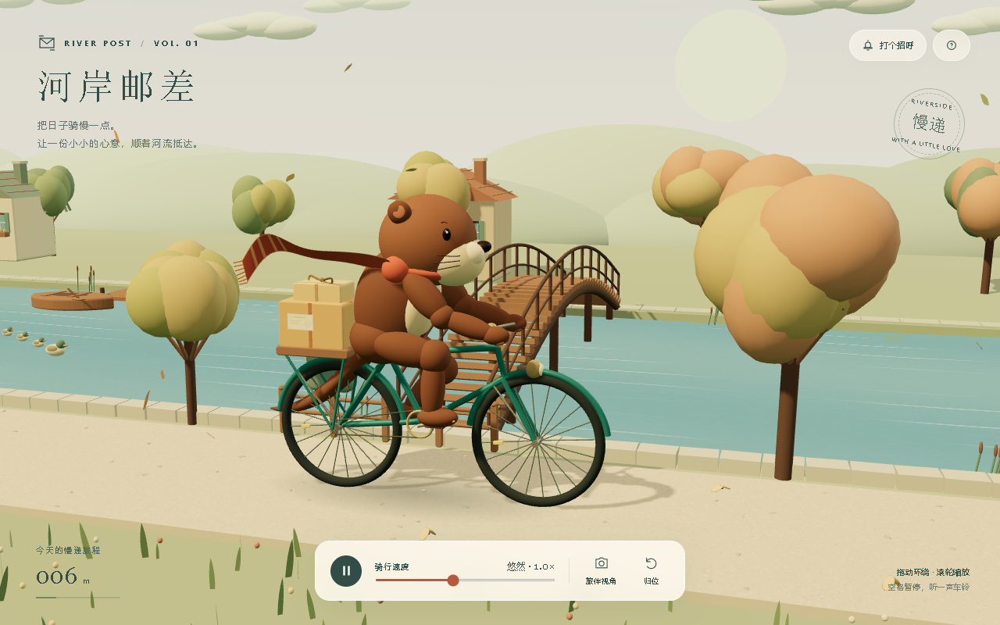
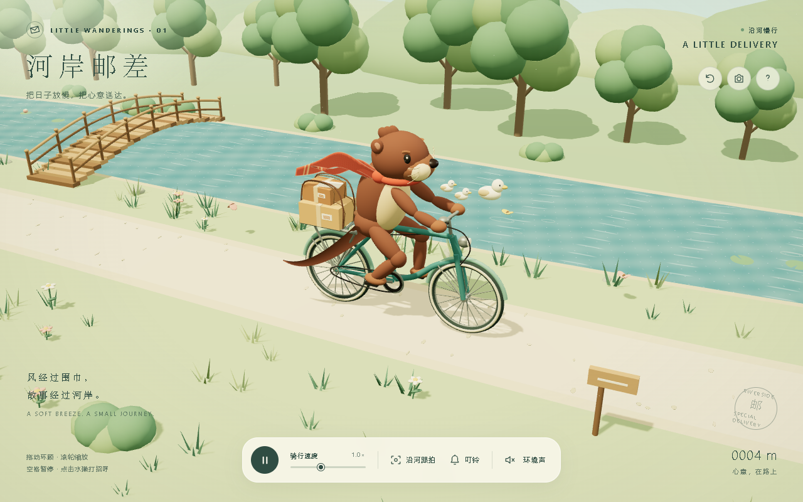
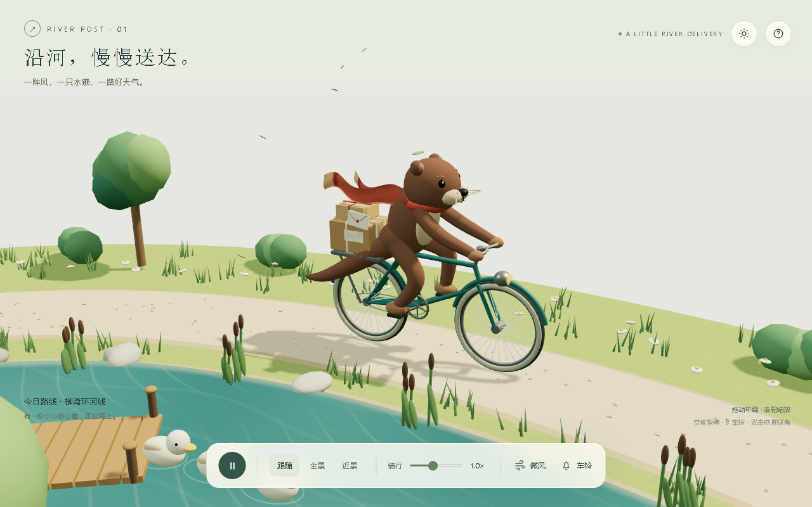

01 · GPT-6.1 Sol / 极高（xhigh） · Fast · 第1次

核心任务完成，三次Fast中最快；最终选07，侧重更协调的视觉、布料和尾巴。
运行原作 · 下载原HTML · 原场景源码
02 · GPT-6.1 Sol / 极高（xhigh） · Standard · 第1次

绘制调用少，蝴蝶和环境细节是优势；最终选06，角色表达和完整环河运动更合适。
运行原作 · 下载原HTML · 原场景源码
03 · GPT-6 Astra / 极高（xhigh） · Standard · 第1次

选为Astra代表及三个代表中的第1。渲染三角形最多，精细程度与渲染负担同时存在。
运行原作 · 下载原HTML · 原场景源码
04 · GPT-6.1 Sol / 极高（xhigh） · Fast · 第2次

最终选07，侧重视觉和布料/尾巴的细腻程度；04的额外交互更丰富，不能用单一维度断言完全落后。
运行原作 · 下载原HTML · 原场景源码
05 · GPT-6 Astra / 极高（xhigh） · Standard · 第2次

未选为代表。原制作流程未完成实际浏览器WebGL检查；后续独立检查原交付通过，不把工具预览失败当作成品不能运行。
运行原作 · 下载原HTML · 原场景源码
06 · GPT-6.1 Sol / 极高（xhigh） · Standard · 第2次

选为Sol标准代表及三个代表中的第2；用时的长失败请求不计入质量排名。
运行原作 · 下载原HTML · 原场景源码
07 · GPT-6.1 Sol / 极高（xhigh） · Fast · 第3次

选为Fast代表及三个代表中的第3。布料、尾巴和低渲染负担有优势；路线、互动和运动精度仍有差距。
运行原作 · 下载原HTML · 原场景源码
08 · GPT-6 Astra / 极高（xhigh） · Standard · 第3次

比03快约8分49秒，但不按速度选片。保留03的综合视觉/功能；08的连续形变尾巴和更少三角形是优势。
运行原作 · 下载原HTML · 原场景源码
09 · GPT-6.1 Sol / 极高（xhigh） · Standard · 第3次

正常完成时间与02接近。仍选06，侧重角色表达、编织篮和环境互动；09的肢体连续性更好。
运行原作 · 下载原HTML · 原场景源码